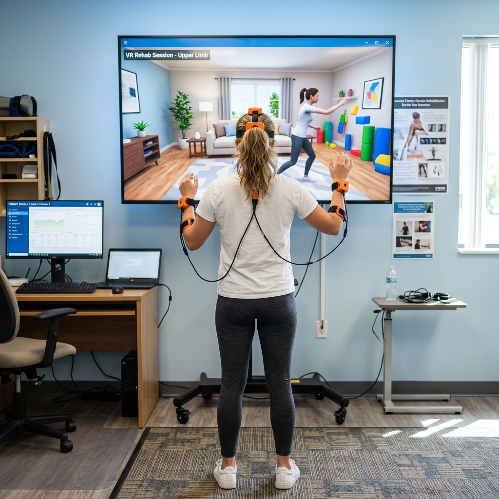

Pacientes en zonas rurales o con movilidad reducida no pueden acudir regularmente a sesiones presenciales de fisioterapia.
❌
Sin control biomecánico en casa
El paciente ejecuta ejercicios sin feedback en tiempo real. Una mala técnica puede agravar la lesión sin que nadie lo detecte.
📊
Sin datos objetivos para el clínico
El fisioterapeuta no dispone de métricas entre consultas y solo cuenta con la autoevaluación subjetiva del paciente.
💸
Hardware especializado inaccesible
Las soluciones existentes requieren sensores inerciales, trajes de captura de movimiento o equipos de RV de alto coste.
⚠ Problema actual

Hardware especializado de alto coste
Sensores inerciales · Trajes de captura · Equipos de RV
70%
de los pacientes abandona la rehabilitación en casa antes de completar el tratamiento por falta de supervisión y motivación, según estudios clínicos de adherencia terapéutica.